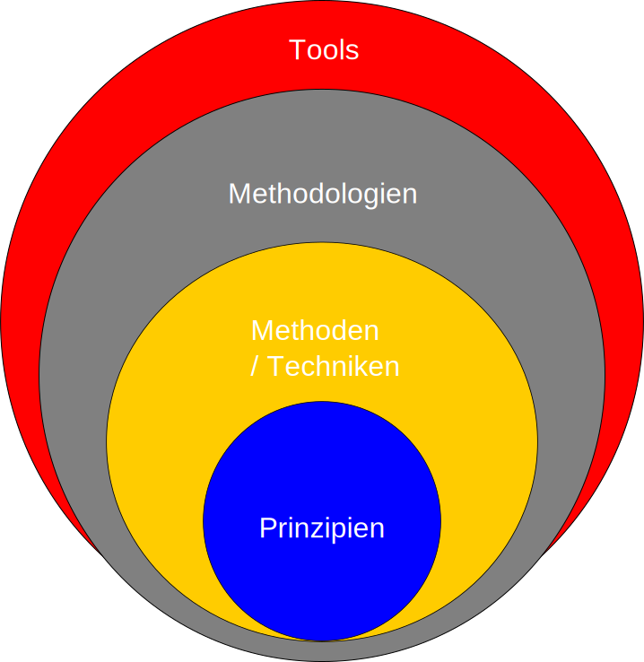

Grundprinzipien des Software engineerings
Marcel Lüthi Departement Mathematik und Informatik
Prinzip
Allgemeingültige Regel, Grundlage, auf der etwas aufgebaut ist; Grundregel; Grundsatz
- Duden
- Technolgien in der Informatik entwickelt sich rasant.
- Grundlegende Prinzipien sind seit vielen Jahrzehnten stabil.
- Gelten für Produkt und Prozess
Eigenschaften guter Prinzipien
Gute Prinzipien sollten abstrakt und falsifizierbar sein.
- Schlecht: Benutze JUnit um Tests zu schreiben
- Schlecht: Schreibe qualitativ gute Software
- Gut: Schreibe Tests immer zuerst
Prinzip - Methoden - Tools
Wichtige Prinzipien
- Genauigkeit und formales Vorgehen
- Trennung der Verantwortlichkeiten (Separations of concerns)
- Modularität
- Abstraktion
- Voraussehen von Veränderungen
- Allgemeinheit
- Schrittweises Entwickeln (Incrementality)
Genauigkeit und formales Vorgehen
- Softwareentwicklung ist ein kreativer Prozess
- ... Systematisches und rigoroses Vorgehen trotzdem unerlässlich.
- Formale methoden sind die höchste Form von Genauigkeit
Genauigkeit und formales Vorgehen

Regeln müssen Kreativität nicht einschränken.
Beispiele für Genauigkeit und Formalität
Produkt:
- Formale Korrektheitsbeweise
- Systematische Generierung von Testdaten
Prozess:
- Exakte, systematische Dokumentation des Entwicklungsprozesses
- Genau spezifizierte Releaseprozesse
Beispiele für Genauigkeit und Formalität
- Typsignaturen sind Beispiele von formaler Spezifikation
int foo(String bar) { ??? }
interface Stream<T > extends BaseStream<T, Stream<T> > {
<R> Stream<R> map(Function<? super T, ? extends R> mapper);
}
Separierung der Verantwortlichkeiten
- Verschiedene Probleme separat angehen
- Reduziert Komplexität jeder Task
- Aufgaben und Verantwortlichkeiten können verteilt und parallelisiert werden
- Divide and Conquer
Beispiele
Produkt:
- Anforderungen separat betrachten
- Funktionalität
- Performance
- Benutzeroberfläche
- ...
Prozess:
-
Software Testing separiert von Entwicklung
- Eigenes Team?
- Phasen in Wasserfallmodell
Modularität
- Wichtigstes Prinzip in der Softwareentwicklung
- Reduziert Komplexität
- Komplexes System wird in kleine Teile zerlegt
- Erlaubt Trennung der Verantwortlichkeiten

Modularität

Modularität

Modular:
- Lose Kopplung
- Starke Bindung

Nicht-modular
- Starke Kopplung
- Lose Bindung
Abstraktion
- Wichtige Aspekte eines Problems werden identifiziert
- Details werden ignoriert
- Spezialfall von "Trennung der Verantwortlichkeiten"
- Trennung wichtig / unwichtig (Details)
Beispiel
- Fahrer muss Funktionsweise des Gebriebes nicht kennen
- Zahlen 1-5 sind zweckmässige Abstraktionen
- Ermöglicht zwischen Fahrzeugtypen zu wechseln

Abstraktion in der Informatik
- Hardware:
- Blöcke und Addressen
- Betriebssystem
- Dateien
- Netzwerk Sockets
- Programmiersprache (Java)
- OutputStream
Veränderungen Voraussehen
- Mögliche Veränderungen werden zur Designzeit identifiziert
- Design wird entsprechend angepasst
- Beispiel: Plattformunabängiges Programmieren
- Betriebssystem spezifische Routinen werden abstrahiert
Steht in Konkurrenz zum YAGNI Prinzip
- You ain't gonna need it
Allgemeinheit
- Oft ist es möglich ein allgemeiners Problem zu lösen
- Verallgemeinertes Problem muss nicht schwieriger sein
- Kann aber Codeverständnis extrem erschweren.
- Gefahr von "Generalized abstract nonsense".
Allgemeinheit
Vergleiche:
public interface IntStream {
StringStream map(Function< Int, String> mapper);
}
mit
public interface Stream<T > extends BaseStream<T, Stream<T> > {
<R> Stream<R> map(Function<? super T, ? extends R> mapper);
}
Schrittweises Entwickeln (Incrementatlity)
- Kleine, inkrementelle Schritte in der Entwicklung
- Wichtiges Prinzip im Entwicklungsprozess
- Grundlage agiler Softwareentwicklung
"Grow instead of build."
Unit tests
- Weshalb ist Falsifizierbarkeit eine wichtige Eigenschaft eines Prinzips?
- Was unterscheidet Prinzipen von Werkzeugen und Methoden?
- Wie hilft Modularität Software zu verstehen?
- Was ist die Gefahr wenn wir das Design auf künftige Veränderungen ausrichten?
- Nenne einen Vorteil des inkrementellen Entwickeln einer Software.